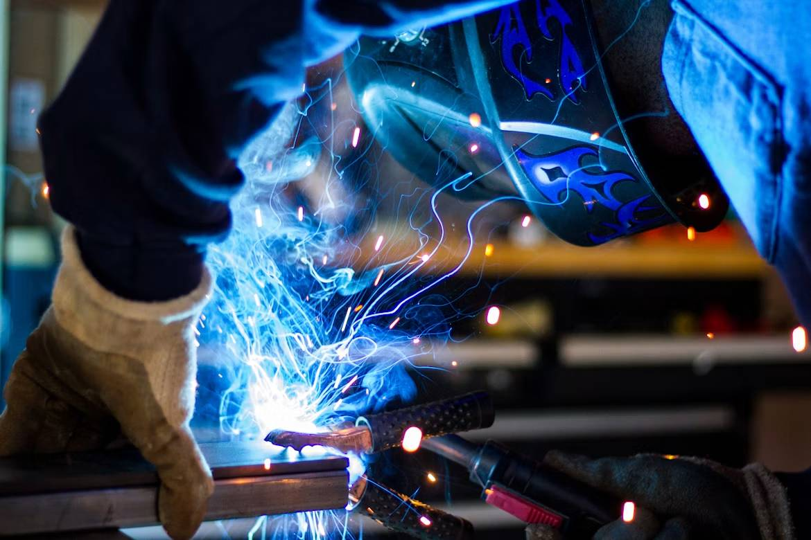
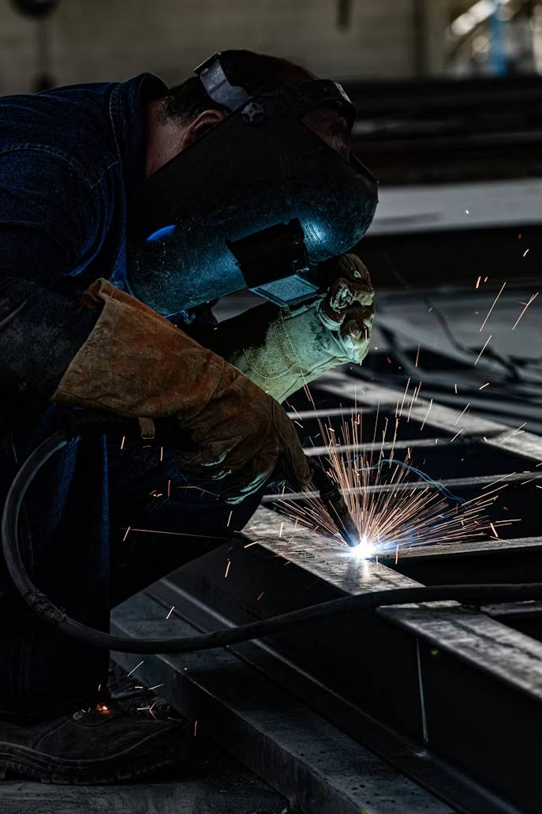
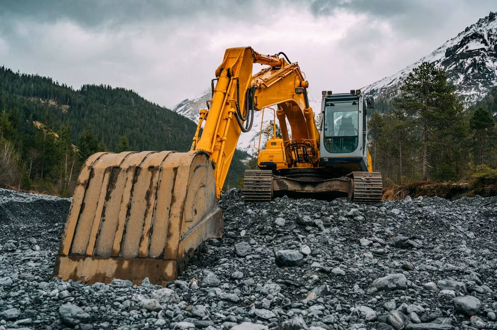

Terraplanagem
- Demolição
- Broca de 25, 30 e 40 cm, até 10 metros de profundidade
- Terraplanagem e abertura de valas
- Limpeza de terrenos
- Movimentação de terra

Orçamento no WhatsApp
Atendemos em todo o Brasil, desde 2009
Locação de máquinas para terraplangem, de corte e solda, estruturas metálicas e manutenção industrial.
Solicitar pelo WhatsApp
Para empresas que precisam de equipamentos sem a necessidade de aquisição, a TTS trabalha com locação de máquinas para Terraplangem, de corte e solda.
Assim, colaboramos pontualmente com o progresso do seu negócio.
Pedir orçamento de locaçãoFundada em São Paulo, em 2009, a TTS atua na prestação de serviços de terraplanagem, industriais e de infraestrutura.
Ao longo dos anos, ampliamos nossa área de atuação e nosso portfólio para atender diferentes necessidades, sempre buscando agilidade, qualidade e segurança na execução dos serviços.
Oferecer serviços industriais de forma ágil e acessível, com soluções personalizadas para cada cliente.
Ampliar a presença da TTS no mercado e tornar a empresa cada vez mais completa em soluções industriais e de infraestrutura.
Esforço, competência, qualidade, agilidade, eficiência e responsabilidade.
Ao longo da nossa trajetória, atendemos empresas de diferentes segmentos e necessidades.
Deslize para o lado e veja todas as empresas.

Com sede em São Paulo, a TTS atende demandas industriais em diferentes regiões do país.
Atuação no mercado desde 2009.
Diferentes soluções em uma única empresa.
Cada projeto é tratado de acordo com sua necessidade.
Buscamos atender às demandas de forma prática e eficiente.
Nossa equipe está pronta para entender a sua necessidade e encontrar a melhor forma de atendê-la. Solicite um orçamento.
Chamar no WhatsApp